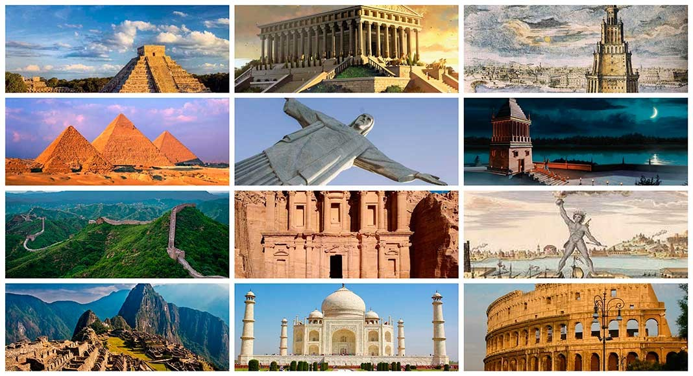
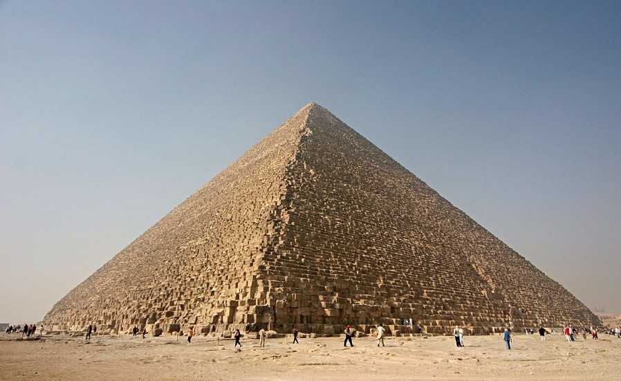

Machu Picchu
La ciudadela Inca de Machu Picchu fue elegida como una de las 7 maravillas del mundo moderno el 7 de Julio del 2007 por la imponencia y belleza de todo el conjunto arqueológico. Se sabe que el sitio nunca fue explorado por los españoles a su llegada al imperio, por eso es una muestra espectacular de la grandiosa organización, arquitectura e ingeniería. Resulta admirable entender cómo los incas pudieron construir ciudades y caminos complejos en medio de las montañas como parte de ubicación estratégica como en este caso la ciudadela inca fue construida en la cima de la montaña. También es importante conocer que Machu Picchu fue declarado Patrimonio Cultural de la Humanidad por la UNESCO en 1983 y también se resalta su importancia por ser parte de un conjunto cultural y ecológico, siendo conocido como el Santuario histórico de Machu Picchu. Los viajeros se acercan hasta Aguas Calientes para iniciar la ruta inca que Hiram Bingham, el profesor de Yale, popularizó a principios del siglo XX
TABLA
También conocida como pirámide de Keops o de Jufu es además de la mayor de las pirámides de Egipto, la más antigua de las siete maravillas del mundo y la única que aún perdura. |
En el siglo XIV fue superado por el chapitel de la Catedral de Lincoln, en Inglaterra, y el edificio de piedra más alto del mundo hasta bien entrado el siglo XIX, siendo entonces superado por la aguja de la iglesia de San Nikolai, en Hamburgo. |
La pirámide fue realizada a lo largo de 20 años y erigida con 2.300.000 bloques de piedra de aproximadamente dos toneladas por bloque, aunque algunos bloques alcanzaban las 60 toneladas. |
||
|  | Fue ordenada construir por el faraón Keops de la cuarta dinastía del Antiguo Egipto. La fecha estimada de terminación de la construcción de la Gran Pirámide es alrededor de 2570 a. C. Dicen que fue construida por Hemiunu. |
Situada en las afueras de El Cairo, Egipto |
Fue el edificio más alto de la Tierra durante 3800 años |
|
Es primera y mayor de las tres grandes pirámides de la Necrópolis de Guiza. |
||||